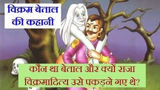

૧-વિક્રમ અને વેતાલની મુલાકાત

વિક્રમ એક રાજાનું નામ હતું. તેણે કિનારે આવેલા એક શહેર પર શાસન કર્યું
ગોદાવરી નદી. તેઓ તેમની બહાદુરી અને હિંમત માટે ખૂબ જ પ્રખ્યાત હતા.
લોકો તેમને પ્રેમ કરતા હતા કારણ કે તેમણે હંમેશા ન્યાય આપ્યો હતો.
એક દિવસ એક ઋષિ વિક્રમના દરબારમાં આવ્યા અને તેમને એક ફળ ભેટમાં આપ્યું.
રાજાએ તે તેના ખજાનચીને સોંપી દીધું. ત્યારપછી મુનિએ રાખ્યું
રાજાને ફળ ભેટ આપવા દરરોજ દરબારમાં આવતો. રાજા ન કરી શક્યો
આ વર્તન પાછળનું કારણ સમજો. પરંતુ તેમ છતાં તેણે પ્રયાસ કર્યો ન હતો
ઋષિનો ઇરાદો શોધો.
જો કે, એક સવારે, વિક્રમે જોયું કે એક વાંદરો મહેલની દિવાલ પર બેઠો હતો
અને તેને ફળ આપ્યું. વાંદરાએ ફળ ખાવાનું શરૂ કરી દીધું હતું જ્યારે અચાનક તેમાંથી એક ચમકતો રત્ન
પડી ગયો. રાજાને ખૂબ જ આશ્ચર્ય થયું. તેણે તરત જ તેના ખજાનચીને સ્ટોરેજમાં રાખેલા તમામ ફળો મેળવવાનો આદેશ આપ્યો.
ફળો ખરાબ થઈ ગયા હતા, પરંતુ જ્યારે રાજાએ તેમને કચડી નાખ્યા, ત્યારે તેમાંથી દરેકને કિંમતી રત્ન મળ્યું. ઉદાર
રાજાએ આ બધા રત્નો ગરીબોને દાનમાં આપ્યા અને દરબારમાં ઋષિની મુલાકાતની રાહ જોઈ.
બીજા દિવસે, ઋષિ બીજા એક ફળ સાથે વિક્રમના દરબારમાં ગયા.
વિક્રમે ઋષિનું સ્વાગત કર્યું અને તેમને પૂછ્યું, "તમારી પવિત્રતા!
મહેરબાની કરીને મને કહો કે તમે મને આટલી કિંમતી ભેટ કેમ આપી?
યોગ્ય કારણ વિના, હું તમારી પાસેથી કોઈ ભેટ સ્વીકારી શકતો નથી."
ઋષિએ જવાબ આપ્યો, "મને આધ્યાત્મિક ધ્યેય માટે બહાદુર માણસની મદદની જરૂર છે.
તમે મને મદદ કરશો?"
"હે રાજા, મહેરબાની કરીને આગામી ચંદ્રવિહોણા દિવસે સ્મશાનભૂમિ પર આવો
રાત તે અહીંથી 20 માઈલના અંતરે છે. હું તારી રાહ જોઇશ
વડના ઝાડ નીચે." વિક્રમ સૂચનાઓનું પાલન કરવા સંમત થયો.
તે રાત્રે, વિક્રમે તેના માથા અને શરીરને કાળા રંગથી ઢાંકી દીધા હતા
કાપડ અને અજાણ્યા, જંગલમાં નિયત સ્થળ પર પહોંચ્યા. આ
ઋષિ તેમની રાહ જોતા હતા અને તેમને કહ્યું, "રાજા વિક્રમ! દક્ષિણ તરફ
આ જંગલમાં એક જૂનું આમલીનું ઝાડ છે જેના પર એક શબ ઊંધું લટકાવેલું છે
નીચે કૃપા કરીને તેને મારી પાસે લાવો." રાજા તરત જ તેની પાછળ ગયો
ઋષિનો આદેશ અને તે આમલીના ઝાડ પર પહોંચ્યા. એક શબ શોધવા પર
ત્યાં, તેણે તેને ઢીલું કાપી નાખ્યું. મૃતદેહ જમીન પર પડતાં જ તે
કર્કશ અવાજ સાથે જોરથી હસ્યો. રાજાને ખબર પડી કે એ
ભૂત પરંતુ હિંમતવાન રાજાએ શરીરને તેના ખભા પર લઈ લીધું
અને તેની રાજધાની તરફ આગળ વધ્યો. થોડે દૂર, ભૂત વિક્રમના ખભા પરથી નીકળીને તેના મૂળ સ્થાને ભાગી ગયું. રાજા
ઝાડ પર ચઢી ગયો, ભૂતને નીચે લાવ્યો અને તેને તેના પર મૂક્યો
ખભા ફરી ચાલવા લાગ્યા. "તમે કોણ છો?" તેણે ભૂતને પૂછ્યું.
"હું બેતાલ છું" ભૂતે જવાબ આપ્યો અને બદલામાં વિક્રમને પૂછ્યું, "કેમ અને
તમે મને ક્યાં લઈ જઈ રહ્યા છો?"
"એક ઋષિએ મને તમને તેમની પાસે લાવવાની વિનંતી કરી છે," વિક્રમે જવાબ આપ્યો.
બેતાલને વિક્રમ સાથે જવા સામે કોઈ વાંધો નહોતો પણ તેણે
એક શરત મૂકી. “આપણે લાંબુ અંતર કાપવાનું છે અને કંટાળાજનક ચાલ પર રાહત મેળવવી છે
, હું તમને એક વાર્તા કહીશ. પરંતુ જયાં સુધી આપણે ગંતવ્ય પર પહોંચીએ નહીં ત્યાં સુધી તમારે એકપણ શબ્દ ઉચ્ચાર
કરવાનો નથી.
જો કોઈ પણ રીતે તમે કંઈપણ ઉચ્ચાર કરશો, તો હું આમલીના ઝાડ પર પાછો ઉડીશ. શું તમે આ વાત સાથે સંમત છો?" વિક્રમ આ
માટે સંમત થયો અને બેતાલની વાર્તા ચૂપચાપ સાંભળતો રહ્યો.
|